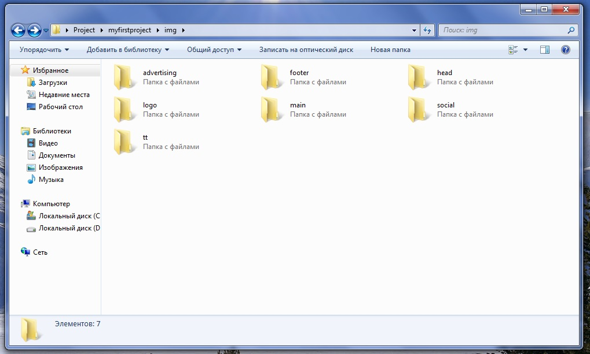
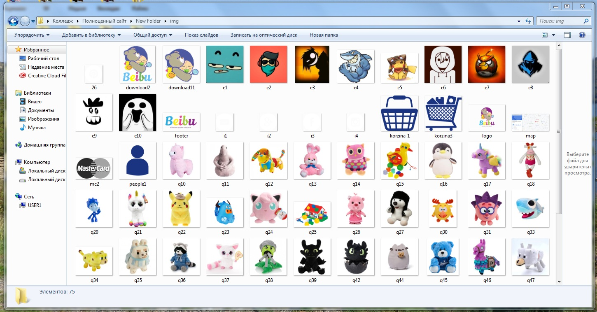
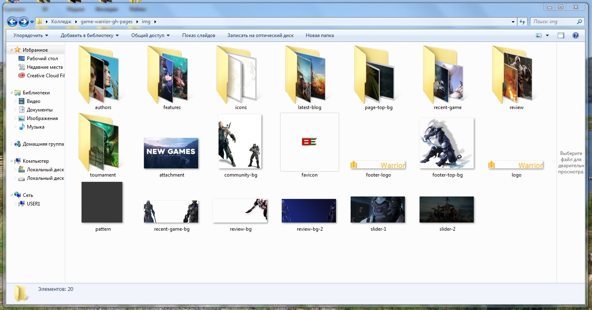

Правильная организовка папки с картинками
Правильная организовка папки с картинками имеет очень большой смысл, так как она сильно упрощает работу с исходниками и сокращает время работы.
При создании основной папки, мы создали папку с названием"img"
Но это ещё не всё, в этой папке для упрощения работы стоит создать ещё несколько папок для различных страниц и элементов на этой странице, чтобы при создании больших проектов вы не перепутали картинки.
Кому-то это может показаться полным абсурдом, но авторы учебника(смотри подвал сайта) утверждают, что такая стратегический ход, обеспечивает гарантированный успех при создании своего или не своего проекта.
Советы новичкам
Чтобы работать было проще, советуем правильно называть изображения(картинки) дабы избежать путаницы
Ниже пример неправильного называния файлов ↓

Согласитесь выглядет не очень. Да и быстро сориентироваться и изменить путь к картинке будет сложно и долго. Сначала вы должны открыть эту папку, найти нужную вам картинку, если не настроен вид изображений, то каждую нужно будет прокликать, и только потом вставить её в ваш проект.
Ниже продемонстрирована правильная структура такой папки ↓

Согласитесь, так намного лучше.
Мы не утверждаем, что так правильнее или так нужно делать. Мы считаем, что соблюдая вышесказанные советы, вы облегчите работу не только себе, но и будущим программистам которые будут заниматься вашим проектом.